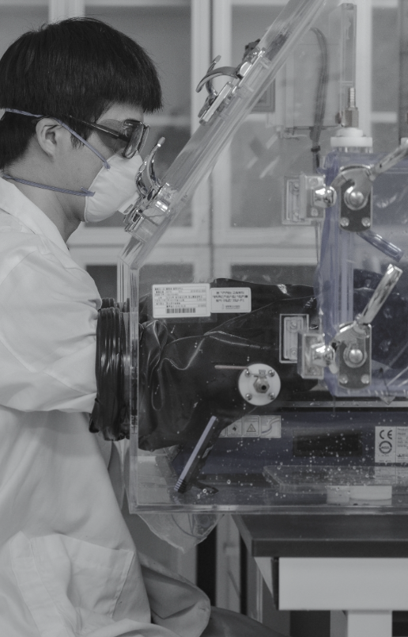
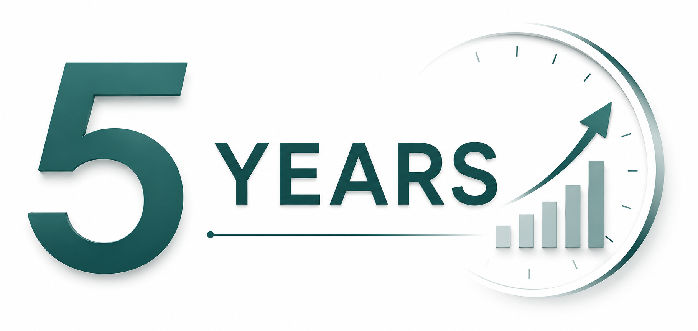
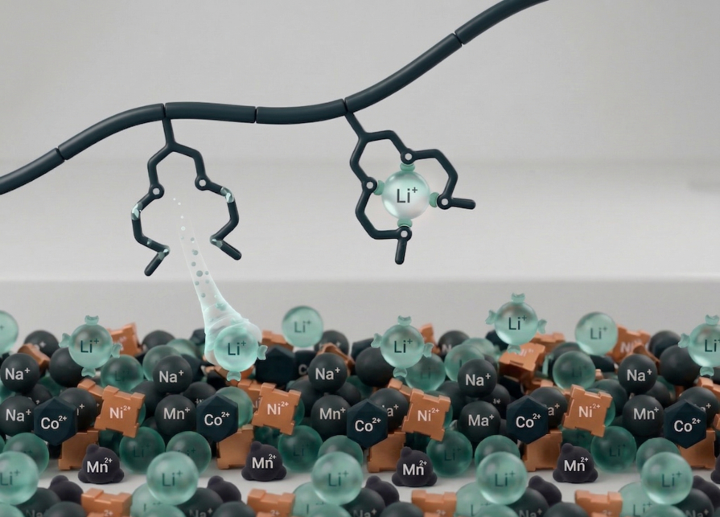
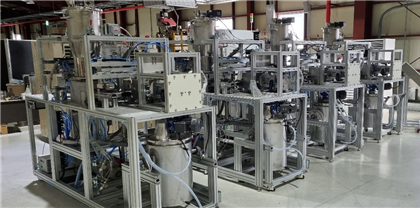
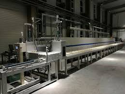
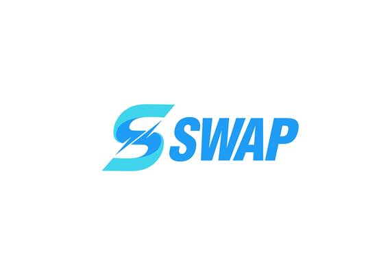
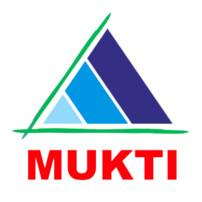
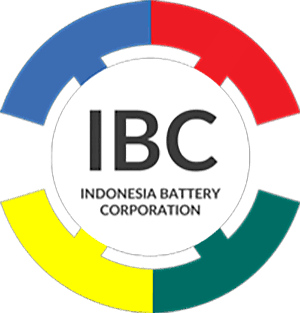

Small action, BIG DIFFERENCE

지속가능한 배터리 재활용을 위한
화학소재 및 친환경 차세대 공정기술

COMPANY
기업 소개
기업명
주식회사 코솔러스
대표자
김성현
임직원
27명
소재지
대한민국 전주, 익산, 완주, 군산
비전
사용 후 배터리 핵심광물 회수를 위한 혁신 화학소재와 친환경 공정 기술을 통해, 인류의 지속가능한 미래를 선도하는 글로벌 리더로 도약

2
BACKGROUND
배터리 밸류체인의 환경·지정학적 리스크

글로벌 배터리 핵심광물 공급망 — 중국 집중도
글로벌 공급망 집중도
19/20
전략광물 정제 1위 품목
70%
전략광물 정제 평균 점유율
89%
글로벌 블랙매스 처리 비중
환경·사회적 비용
133t
니켈 1톤당 폐기물 발생량
채굴 산업의 노동 및 인권 문제도 함께 제기되고 있습니다.
Source: IEA, Global Critical Minerals Outlook 2025 · Benchmark Mineral Intelligence, 2025 · Earthworks, Filtered Tailing in Indonesia, 2026
3
BACKGROUND
북미 ESS 시장, 고성장의 변곡점
31.6%
CAGR
연평균 성장률(GWh 기준)

북미 ESS 시장 성장 전망
에너지 용량(GWh) 기준으로 북미 에너지저장장치(ESS) 시장은 향후 지속적인 고성장이 전망되며, 이는 코솔러스가 겨냥하는 핵심 수요처 중 하나입니다.
Source: SNE Research(2023) · Mirae Asset Securities Research Center(2026.1) · KATECH Mobility Insight(2024.4, SNE Research 인용)
4
BUSINESS MODEL
순환경제 비즈니스 모델
폐자원 회수
폐자원으로부터 핵심 광물을 확보해 배터리 원재료 수요부족을 해결합니다.
환경영향 저감
유해물질 억제 및 온실가스 감축으로 환경 오염을 저감합니다.
신공급망 구축
제조 → 재활용 → 제조로 이어지는 재활용 기반 新공급망을 구축합니다.
5
TECHNOLOGY
1세대 공정의 한계와 코솔러스의 솔루션
1세대 공정 — D2EHPA
기존 추출제(1세대): 광산·염호 기반 금속 회수용 추출제
- 낮은 선택성
- 제한된 동작 환경(pH 등)
- 상분리 불안정
- 부산물 과다발생(망초 등)
1.5세대 — RECYION Series
코솔러스 고성능 추출제(1.5세대 화학소재)
RECYION Series 도입으로 D2EHPA 대비 재활용 효율을 개선합니다.
소재 및 공정 개선 필요 → 고성능 추출제(RECYION Series) 도입으로 해결
6
TECHNOLOGY
고성능 추출제 — 경쟁사 대비 공정 효율
| 구분 | COSOLUS | 벨기에 S사 | 중국 K사 |
|---|---|---|---|
| 공정시간 | 기준(Baseline) | COSOLUS 대비 100% 증가 | COSOLUS 대비 50% 증가 |
| 첨가제 사용량* | 기준(Baseline) | COSOLUS 대비 10% 이상 추가 | COSOLUS 대비 5% 이상 추가 |
*블랙매스 1톤당 첨가제 사용량 기준. 공정시간 값은 원문 인접 문단 텍스트로 재구성(수치 자체는 원문 그대로).
7
TECHNOLOGY
추출단수 저감이 만드는 CAPEX·OPEX 경제성
CAPEX 절감
OPEX 절감
| 항목 | 기존 추출제 | COSOLUS |
|---|---|---|
| 추출단수 | 5단 | 4단 |
추출단수 1단 저감(20% 감소)으로 CAPEX 경제성을 확보합니다.
니켈 1톤당 망초 3.6톤 → 3.3톤
연간 니켈 16,000톤 기준 4,800톤 저감
망초 저감으로 OPEX 경제성을 확보합니다.
*대한민국 배터리 재활용 업체들의 블랙매스 연간 처리량 기준(16,000t × (3.6-3.3) = 4,800t)
8
TECHNOLOGY
직접리튬추출(DLE) — 재활용 공정 안에서 완성
NCM
스크랩
스크랩
→
침출
→
불순물
제거
제거
→
① Mn
→
② Co
→
③ Ni
→
④ Li
→
역추출
기존 DLE(증발법)


1단계, 증발 농축 기반 Li 회수율 3.12%
코솔러스 재활용 공정
4단계 통합 회수
Mn · Co · Ni · Li
NCM 스크랩 재활용 공정 안에서 Mn·Co·Ni·Li을 순차적으로 통합 회수 — 별도 DLE 설비 없이 리튬까지 완성합니다.
9
TECHNOLOGY
DLE 기술 동향 비교
| 구분 | 흡착제 | 추출제 | 분리막 | 전기화학 |
|---|---|---|---|---|
| 작동원리 | Li⁺(액상)-흡착제(고상) 선택적 상호작용 | Li⁺(액상)-추출제(액상) 선택적 상호작용 | Li⁺(액상)의 분리막(고상) 선택적 이동 | Li⁺(액상)-전극(고상) 선택적 상호작용 |
| 기술성숙도(TRL) | TRL 9(상용화) | TRL 4-5 | TRL 4-5 | TRL 3-4 |
| 장점 | 선택성 우수, 공정 단순 | 높은 회수 효율, 재사용 가능, 기존 공정 적용 가능 | 우수한 효율, 공정 단순, 낮은 화학약품 사용량 | 우수한 효율, 낮은 화학약품 사용량 |
| 단점 | 재사용성 제한, 높은 운영비용 | 높은 운영비용 | 높은 운영비용 | 복잡한 시스템, 대규모 양산 한계 |
Source: Desalination, 2024, 575, 117249
10
TECHNOLOGY
DLE 핵심 경쟁력 — 추출제·분리막 결합 기술
COSOLUS DLE 핵심 성과
＞90%
리튬 재자원화율
＜5,500원/kg
공정비용
*리튬선물 가격 약 44,100천원/ton 기준(KOMIS, Green Chem. 2026, 28, 1144)
구성요소별 기여도
분리막 & THz 기술
3% → 90%
핵심소재
3% → 50%

추출제-분리막 결합의 선택적 Li⁺ 포집 메커니즘
- 빠른 물질전달(액-액 접촉)
- 우수한 재활용 효율(화학적 결합 + 공간적 분리)
- 액상 공정 기반 연속 운전
- 분리막 기반 농축으로 첨가제 소모량 감소
11
TECHNOLOGY
친환경 차세대 배터리 재활용 공정(2세대)
COSOLUS 2세대 재활용 공정
① COSOLUS 유도가열
고온 열처리로 소재를 분리
기존 대비 개선된 유도가열 방식
→
② 전처리 공정
투입 소재 선별·정리
폐흑연 처리 포함
→
③ 블랙매스 생성
양극재용 / 음극재용 분리
용도별 블랙매스 구분 생성
→
④ COSOLUS 부유선별
고순도 소재 선별·회수
기존 대비 개선된 부유선별 방식
고순도 정제흑연 + 코발트·니켈 회수 — 기존 1세대 공정(유도가열/부유선별/건식환원) 대비 경제성·친환경성·양산성을 확보합니다.
12
TECHNOLOGY
2세대 공정의 가격·기술 경쟁력
| 비교 기준 | 기존 소성로(Pusher Kiln) | COSOLUS(유도가열) |
|---|---|---|
| 공정시간 | 10시간 이상 | 1분 이내 |
| 승온속도 | 기준 | 기존 대비 200배 |
| 에너지 투입 | 기준(높음) | 432 Wh/kg (64% 절감) |
| 흑연 순도 | - | 99% 이상 |
※ 일부 비교 기준은 기존 소성로 대비 열세일 수 있음(원문 표기, 구체 항목은 원문에 명시되지 않음)
추가 기술 신뢰도
- 건식환원 Co 회수 순도 > 95%
- PCT 특허 2건 출원


COSOLUS 실제 파일럿/양산 설비로 추정되는 사진
13
INVESTMENT
투자 포인트
기술력
- 추출제 최상위 합성·정제 기술
- 친환경 공정 기술(건식환원·유도가열)
- Closed-loop System 기술로 환경부담 최소화
사업화 방향
1.5세대(RECYION) — XX하이텍·XX코 등 현장적용 PoC 진행 중
2세대(친환경 공정) — XX자동차 연계 신공급망 구축, 일본·인도네시아 시장 진출(파일럿 기술검증 후 JV 설립)
투자라운드
Series A2
목표 투자유치 금액 80억원
투자금 사용 계획
- 글로벌 진출을 위한 국외법인 설립·운영
- 공장 건설을 위한 토지 구매·건축(추출제 CAPA, 공정 파일럿)
14
GLOBAL EXPANSION
일본·인도네시아 시장 진출
인도네시아
전기자전거 업체 1대주주와 투자 논의가 진행 중입니다.



일본
현지 투자사·재료업체 등과 투자 논의가 진행 중입니다.
일본 배터리·소재 생태계 관련 기업(특정 파트너십 확정 아님)
15